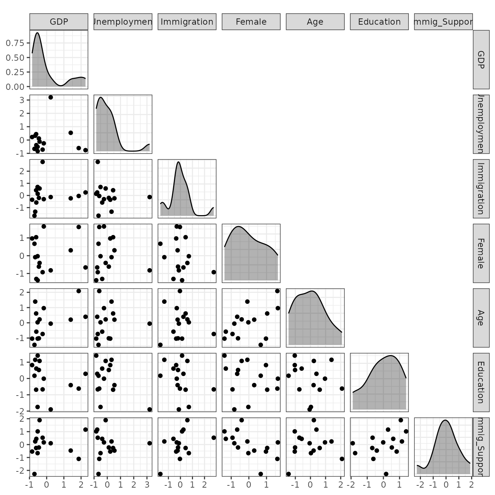
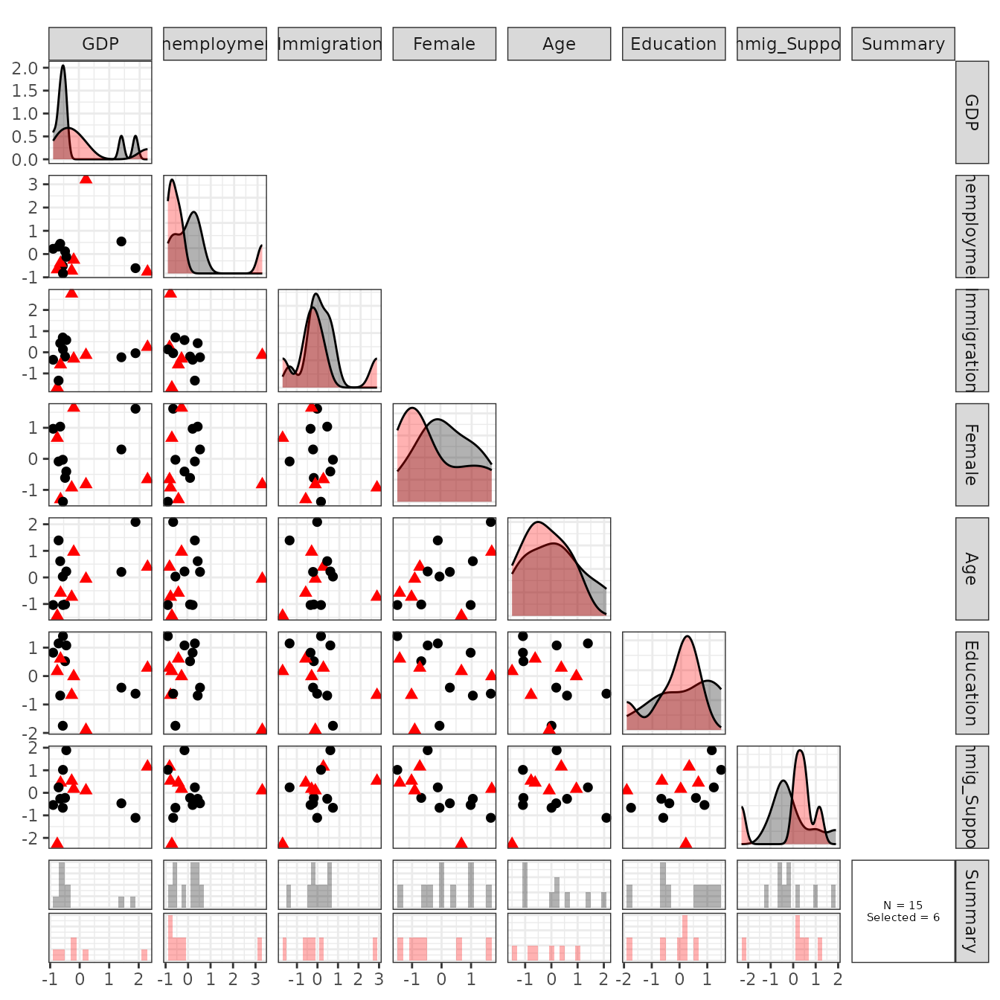
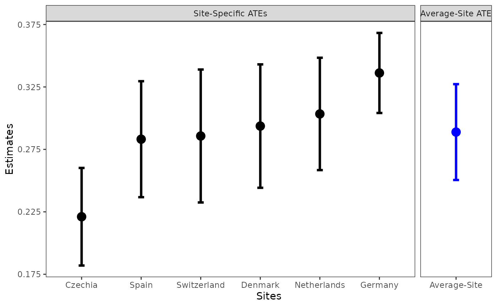

Introduction to SPS
intro.Rmd
On this page, we provide the introduction to spsR
package (10 minute read).
Overview:
We provide the overview ofspsRpackage.Example: Multi-Country Survey Experiment:
We introduce an illustraitve example and its data set.sps: Site Selection:
We explain how to use functionsps()for site selectionsps_estimator: Estimate the Average-Site ATE:
We explain how to use functionsps_estimator()to analyze multi-site studies.
1. Overview
External validity of causal findings is a focus of long-standing debates. Whether and how can researchers generalize causal findings across different contexts and settings? To address this question, an increasing number of researchers use a multi-site/multi-context design where researchers conduct causal studies in multiple sites to compare and aggregate findings across contexts.
When designing multi-site experiments (or observational studies), the fundamental research design question is how should we select study sites for external validity?
The R package spsR aims to help researchers
select sites for external validity with statistical foundation,
while accommodating practical and logistical constraints.
In particular, spsR implements Synthetic Purposive
Sampling (SPS) introduced in Egami and Lee (2023+),
which improves upon conventional purposive sampling by combining ideas
from the synthetic control method — it selects diverse sites such that
non-selected sites are well approximated by the weighted average of the
selected sites. By doing so, even without random sampling, we can make
the weighted average of selected sites representative of all the sites,
including non-selected sites in the population of sites. Please read Egami and Lee (2023+)
for the methodological details.
Using spsR, researchers can
- Select diverse sites based on the SPS framework
- Estimate the average causal effect for the population of sites
2. Example: Multi-Country Survey Experiment
We use a multi-country survey experiment on attitudes toward immigrants (Naumann et al., 2018) as an example here. This study aims to answer a long-standing question in the immigration literature—whether and how much do natives prefer highly skilled migrants to low skilled migrants? To do so, in each site, they conduct a survey experiment where they randomly varied the skill level of hypothetical immigrant groups, i.e., “professionals” or “unskilled labors” (treatment variable), and asked respondents to report the support level for this immigrant group (outcome variable).
In this example, we try to select 6 countries from 15 European countries as study sites for the multi-site survey experiment.
When selecting study sites for multi-site experiments, we choose site-level variables that we want to diversify. For example, to understand whether causal findings vary across different contexts, researchers might include diverse countries with different GDP, size of migrant population, unemployment rates, and so on. More formally, researchers should choose site-level variables that predict across-site heterogeneity of causal effects.
In this illustration, we consider 8 variables discussed in the
original paper: GDP (GDP), unemployment rates
(Unemployment), size of migrant population
(Immigration), the proportion of females
(Female), the mean age (Age), the mean
education (Education), general support for immigration
(Immig_Support), and sub-regions in Europe
(Eastern Europe, Northern Europe,
Southern Europe, Western Europe).
colnames(X_Imm)## [1] "GDP" "Unemployment" "Immigration" "Female"
## [5] "Age" "Education" "Immig_Support" "Eastern Europe"
## [9] "Northern Europe" "Southern Europe" "Western Europe"In practice, it is recommended to standardize each continuous variable to make the scale of site-level variables comparable. That is, each variable has the mean zero and the standard deviation one.
var_cont <- c('GDP', 'Unemployment', 'Immigration',
'Female', 'Age', 'Education', 'Immig_Support')
X_Imm[, var_cont] <- scale(X_Imm[, var_cont])
round(head(X_Imm), 3)## GDP Unemployment Immigration Female Age Education
## Austria -0.528 -0.511 0.698 -0.029 0.032 -1.747
## Belgium -0.453 0.117 -0.202 -0.615 -1.019 0.522
## Switzerland -0.236 -0.720 2.769 -0.927 -0.734 -0.669
## Czechia -0.710 -0.663 -1.668 0.672 -1.446 0.170
## Germany 2.259 -0.761 0.249 -0.661 0.396 0.288
## Denmark -0.602 -0.384 -0.582 -1.306 -0.581 0.609
## Immig_Support Eastern Europe Northern Europe Southern Europe
## Austria -0.664 0 0 0
## Belgium -0.226 0 0 0
## Switzerland 0.530 0 0 0
## Czechia -2.276 1 0 0
## Germany 1.158 0 0 0
## Denmark 0.444 0 1 0
## Western Europe
## Austria 1
## Belgium 1
## Switzerland 1
## Czechia 0
## Germany 1
## Denmark 0Users can use sps_plot() to visualize the distribution
of site-level variables before site selection. We select the first
several variables that are continuous.
sps_plot(X = X_Imm, before_selection = TRUE, columns = var_cont)
3. sps: Site
Selection
We can use sps() to select 6 sites from 15 European
countries (the population of sites). We start with the basic version of
sps and illustrate refinements next.
out <- sps(X = X_Imm, N_s = 6)## Selecting Study Sites...Arguments
-
X: Site-level variables for the population of sites. Row names should be names of sites. -
N_s: Number of study sites to be selected.
In this example, sps selected the following 6 sites.
out$selected_sites## [1] "Switzerland" "Czechia" "Germany" "Denmark" "Spain"
## [6] "Netherlands"Users can investigate the selected sites visually using
sps_plot().
sps_plot(out, columns = var_cont)
Red triangles represent selected sites and black circles represent non-selected sites. In the last row and the diagonal plots, users can see the marginal distribution of each variable. All the remaining figures in the middle show bivariate relationships between two variables.
We can see that selected sites successfully cover a wide range of values in each site-level variable.
If necessary, users can refine site selection using stratification to make sure selected sites satisfy certain conditions. This stratification can help users to incorporate various practical, logistical, and ethical constraints. See some examples below.
Stratify
SPS
In practice, researchers might want to stratify some variables to make sure that study sites satisfy certain conditions.
Example 1: Improve Diversity of Site-Level Variables
It is often useful to select sites that have high, middle, low values in some site-level variables. For example, users might want to make sure that we select at least one country from low, medium, and high GDP countries.
Users can enforce this condition using
stratify_sps().
To select countries with high GDP, we might want to select
at least 2 sites that have GDP
larger than or equal to 0.5 (i.e., 0.5
standard deviation because we standardized above). We can incorporate
this information as follows.
st_GDP_1 <- stratify_sps(X = X_Imm,
num_site=list("at least", 2),
condition=list("GDP", "larger than or equal to", 0.5))## 3 sites satisfy the specified `condition` and sps() will select at least 2 sites from them.To select countries with medium GDP, we might want to select
at least 2 sites that have GDP
between c(-0.25, 0.25) (i.e., between -0.25
and 0.25 standard deviation).
st_GDP_2 <- stratify_sps(X = X_Imm,
num_site=list("at least", 2),
condition=list("GDP", "between", c(-0.25, 0.25)))## 3 sites satisfy the specified `condition` and sps() will select at least 2 sites from them.Finally, to select countries with low GDP, we might want to select
at least 2 sites that have GDP
smaller than or equal to -0.5 (i.e., -0.5
standard deviation).
st_GDP_3 <- stratify_sps(X = X_Imm,
num_site=list("at least", 2),
condition=list("GDP", "smaller than or equal to", -0.5))## 7 sites satisfy the specified `condition` and sps() will select at least 2 sites from them.Arguments
num_site: A list of two elements, e.g.,list("at least", 1). This argument specifies the number of sites that should satisfyconditionspecified below. The first element should be eitherat leastorat most. The second element is integer. For example,list("at least", 1)means that we stratify SPS such that we select at least 1 site that satisfiescondition(specified below).condition: A list of three elements, e.g.,list("GDP", "larger than or equal to", 1). This argument specifies conditions for stratification. The first element should be a name of a site-level variable. The second element should be eitherlarger than or equal to,smaller than or equal to, orbetween. The third element is a vector of length 1 or 2. When the second element isbetween, the third element should be a vector of two values. For example,list("GDP", "larger than or equal to", 1)means that we stratify SPS such that we selectnum_sitesites that have GDP larger than or equal to 1.
After specifying these staratification, researchers can supply them
to sps().
## Selecting Study Sites...Arguments
-
stratify: Alistwhere each element is an output from functionstratify_sps().
out_GDP$selected_sites## [1] "Switzerland" "Czechia" "Denmark" "Spain"
## [5] "France" "United Kingdom"Example 2: Select Countries from Each Sub-Region
It is often useful to select sites from different subgroups. For example, users might want to make sure that we select at least one country from each of 4 sub-regions of Europe.
The following code ensures to select at least
1 site from countries that have
Northern Europe = 1.
st_NE <-
stratify_sps(X=X_Imm,
num_site=list("at least", 1),
condition=list("Northern Europe", "larger than or equal to", 1))## 6 sites satisfy the specified `condition` and sps() will select at least 1 site from them.Similarly, the following codes ensure that we select
at least 1 site from countries that have
Eastern Europe = 1, Western Europe = 1 and
Southern Europe = 1, respectively.
st_EE <-
stratify_sps(X=X_Imm,
num_site=list("at least", 1),
condition=list("Eastern Europe", "larger than or equal to", 1))## 1 site satisfies the specified `condition` and sps() will select at least 1 site from them.
st_WE <-
stratify_sps(X=X_Imm,
num_site=list("at least", 1),
condition=list("Western Europe", "larger than or equal to", 1))## 6 sites satisfy the specified `condition` and sps() will select at least 1 site from them.
st_SE <-
stratify_sps(X=X_Imm,
num_site=list("at least", 1),
condition=list("Southern Europe", "larger than or equal to", 1))## 2 sites satisfy the specified `condition` and sps() will select at least 1 site from them.Finally, users combine them into one list and supply it
to function sps().
## Selecting Study Sites...
out_region$selected_sites## [1] "Switzerland" "Czechia" "Germany" "Denmark" "Spain"
## [6] "Netherlands"Please see Stratified SPS for practical recommendations about stratification.
4. sps_estimator:
Estimate the Average-Site ATE
Once we complete a randomized experiment (or an internally valid observational study) in each site, we now aggregate evidece for external validity.
sps_estimator() will aggregate estimates of the average
treatment effects (ATEs) in each specific site in order to estimate the
average-site ATE (the average of the ATEs in the population of sites).
In our example, the average-site ATE is the average of the ATEs across
15 European countries, including countries that were not selected.
We start with ATE estimates in the selected sites. We use
experimental estimates in selected 6 sites from Naumann et al (2018).
Users only need to obtain point estimates and standard errors of the
average treatment effects (ATEs) in each site. As an example, we use
selected sites from out.
data("exp_estimate_Imm_selected")
exp_estimate_Imm_selected## Estimate Std. Error
## Netherlands 0.3034004 0.02294807
## Germany 0.3362153 0.01635270
## Denmark 0.2936739 0.02520817
## Spain 0.2831690 0.02368973
## Switzerland 0.2857338 0.02715871
## Czechia 0.2210802 0.01993582For external validity analysis, we then aggregate these site-specific ATEs in selected sites to estimate the average-site ATE.
sps_est <- sps_estimator(out = out,
estimates_selected = exp_estimate_Imm_selected)
sps_est2 <- sps_estimator(X = out$internal$X, estimates_selected = exp_estimate_Imm_selected,
selected_sites = sort(unique(out$selected_sites)))
summary(sps_est)##
## Estimate Std. Error CI Lower CI Upper p value
## 0.2888706 0.01957847 0.2504975 0.3272437 0 ***
## ---
## Signif. codes: 0 '***' 0.001 '**' 0.01 '*' 0.05 '.' 0.1 ' ' 1
summary(sps_est2)##
## Estimate Std. Error CI Lower CI Upper p value
## 0.2888706 0.01957847 0.2504975 0.3272437 0 ***
## ---
## Signif. codes: 0 '***' 0.001 '**' 0.01 '*' 0.05 '.' 0.1 ' ' 1Arguments
-
out: Output from functionsps() -
estimates_selected:data.framewith two columns: the first column represents estimates of the site-specific ATEs for the selected sites and the second column represents its corresponding standard error. The number of rows is equal to the number of the selected sites andrownames(estimates_selected)should be names of the selected sites.
We can check the results using summary function.
summary(sps_est)##
## Estimate Std. Error CI Lower CI Upper p value
## 0.2888706 0.01957847 0.2504975 0.3272437 0 ***
## ---
## Signif. codes: 0 '***' 0.001 '**' 0.01 '*' 0.05 '.' 0.1 ' ' 1We can also visualize both site-specific ATEs and the average-site
ATE together using plot().
plot(sps_est)
Finally, users can use site-level cross-validation to assess the influence of unobserved moderators. In particular, users can randomly choose half of the selected sites as if they were unobserved non-selected sites and predict the average ATE of those non-selected sites based on the remaining selected sites. The null hypothesis is that the predicted ATEs are the same as the observed ATEs.
sps_cv_out <- sps_cv(out = out, estimates_selected = exp_estimate_Imm_selected)
round(sps_cv_out$p_value, 2)## [1] 0.94In this example, an estimated p-value is 0.94, and we do not find evidence for the bias due to unobserved moderators.